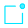

目录 CONTENTS

01
工具定位

厘清OMX的核心定义与技术定位，纠正常见的认知偏差，明确它在现代开发体系中的独特价值与不可替代性。
02
原理拆解
由下往上逐层解析OMX的四层架构体系，深入探究其底层运行机制、数据流转逻辑及模块化设计的技术奥秘。
03
使用教程
从环境搭建到高级功能实战，通过全流程的实操演示，掌握从基础命令到复杂场景下的高效使用技巧。
04
总结与对比
客观复盘工具的核心优势与局限，结合实际业务场景分析其适用边界，并与同类竞品进行多维度的横向评测。